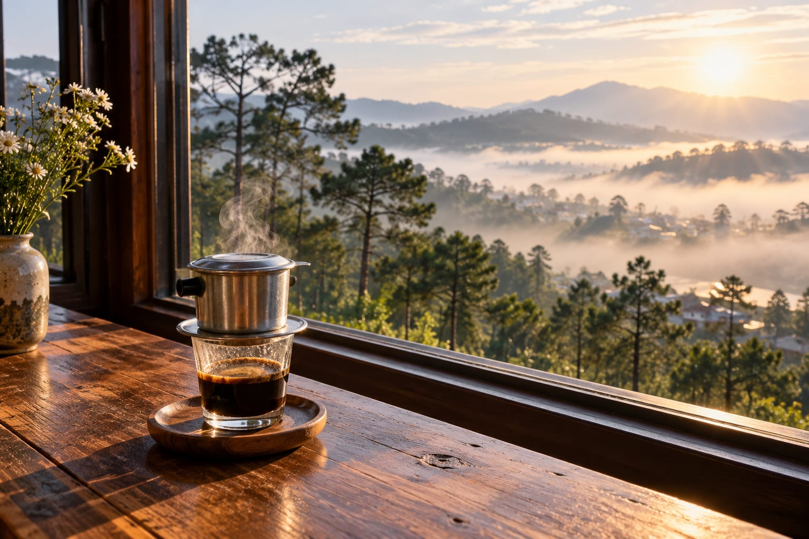

Ngày01
Dạo phố và chạm vào Đà Lạt
Ga Đà Lạt · Hồ Xuân Hương · Nem nướng · Chợ đêm
↗
Lâm Đồng · Việt Nam
Một hành trình 3 ngày 2 đêm dành cho những người muốn chậm lại giữa rừng thông, nếm cái lạnh đầu môi và để thành phố kể chuyện theo cách riêng.
Thời lượng
3 ngày, 2 đêm
Nhịp độ
Không vội vàng
Chi phí dự trù
3,4–5 triệu
Phù hợp
2 người
01 — Hành trình
Lộ trình được sắp xếp theo từng khu vực, để quãng đường ngắn hơn và trải nghiệm có thêm khoảng thở.
Xem các điểm đến →Ga Đà Lạt · Hồ Xuân Hương · Nem nướng · Chợ đêm
Bánh mì xíu mại · Datanla · Thiền viện Trúc Lâm · Lẩu gà lá é
Cầu Đất · Chùa Linh Phước · Túi Mơ To · Trở về
Lịch trình chi tiết
Chọn từng ngày để xem lộ trình, điểm dừng và gợi ý món ăn. Thời gian là ước lượng; hãy linh hoạt theo thời tiết và sức của bạn.
Ngày 01 — phố cổ, hồ và chợ đêm
Tuyến đi bộ / trung tâm07:30 · Ăn sáng
Chọn Bánh mì xíu mại Hoàng Diệu hoặc một quán gần chợ. Sau đó ghé cà phê trên đường Tăng Bạt Hổ / Nguyễn Văn Trỗi.
Mở bản đồ ↗09:00 · Tham quan
Hai điểm cùng hướng phía đông. Dành 45–60 phút ở ga; ghé bảo tàng nếu thích lịch sử địa phương.
Mở bản đồ ↗12:00 · Ăn trưa
Ưu tiên quán quanh Phan Đình Phùng, Tăng Bạt Hổ hoặc khu chợ để không phải quay đầu. Nghỉ trưa trước khi đi bộ ven hồ.
15:30 · Dạo chiều
Đi bộ ven hồ, ngắm hoàng hôn ở quảng trường. Có thể thêm Vườn hoa thành phố nếu còn sức.
Mở bản đồ ↗18:30 · Buổi tối
Ăn nem nướng hoặc lẩu bò trước, rồi đi chợ đêm. Nếu đông người, chỉ chọn một món chính và dành chỗ cho đồ ăn vặt.
02 — Điểm dừng
Đôi khi điều đáng nhớ nhất là một tách cà phê nóng và làn sương chậm qua ô cửa.
01 · Bình yên
Một buổi chiều không cần kế hoạch.
02 · Tinh sương
Đi sớm để săn mây, hoặc chỉ để thở.

03 · Ấm áp
Túi Mơ To, khi vẫn còn dư thời gian.
Bản đồ bỏ túi
03 — Ngân sách
Dự trù cho hai người, không gồm chi phí di chuyển đến Đà Lạt. Linh hoạt theo nơi ở và cách bạn chọn trải nghiệm.
Sẵn sàng lên đường?
Tự chọn giờ đi, điểm đến và ghi chú riêng cho từng ngày. Lịch của bạn được lưu trên thiết bị này.